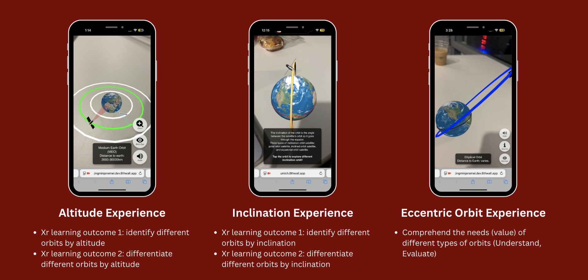

AR Project: Basics of Rocket Science

Designed an intuitive AR experience for learning the basics of rocket science, which are identify and differentiate different orbits by altitude/inclination, and Comprehend the needs (value) of different types of orbits (Understand, Evaluate). The languages utilized are javascript, CSS, and HTML
This video demonstrates the basic interactions within the AR environment, including how to rotate and drag objects, as well as the birds-eye-view button to lay the planets and orbits flat.
A quick tutorial at the beginning of the experience to help clarify some of the basic interaction like rotate and drag.
A brief description for each of the orbit like its altitude and distance indicator. An audio button for accessibility. A Birdseye view button for showcasing the altitude difference between orbits.
A way to zoom in onto satellite’s perspective and see the coverage of this specific satellite chosen (shown as a red disk on earth once entered).